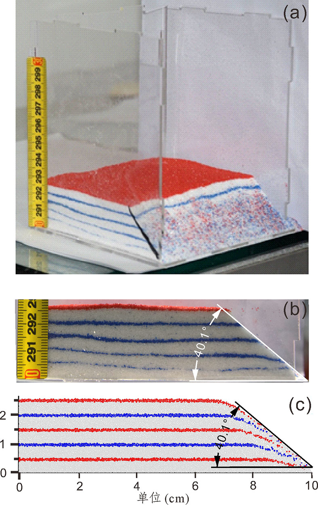
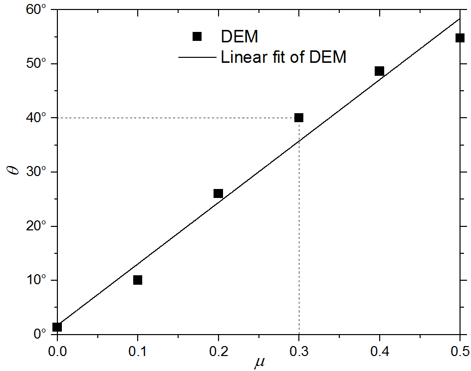
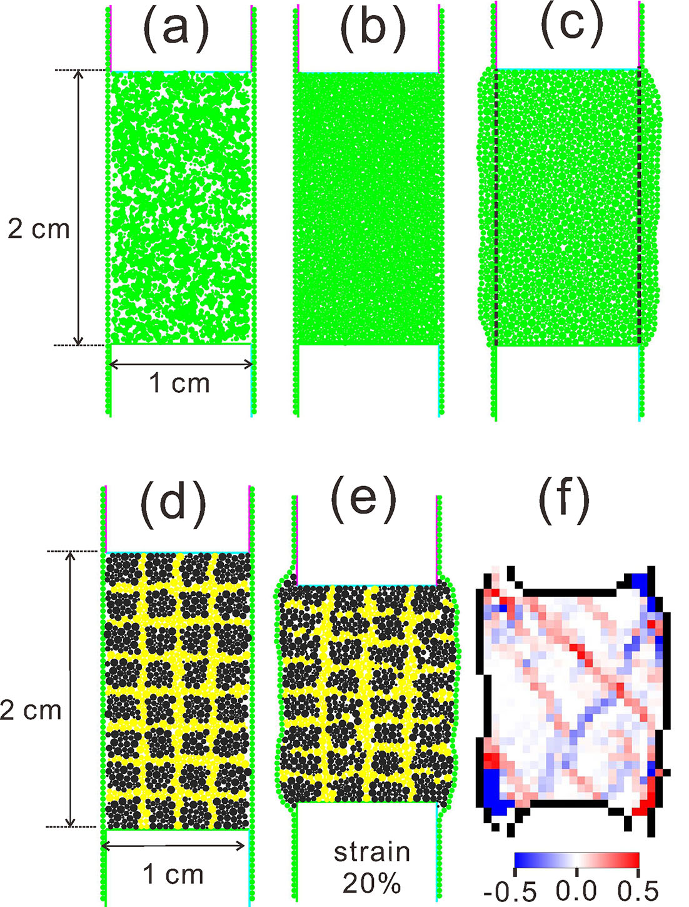
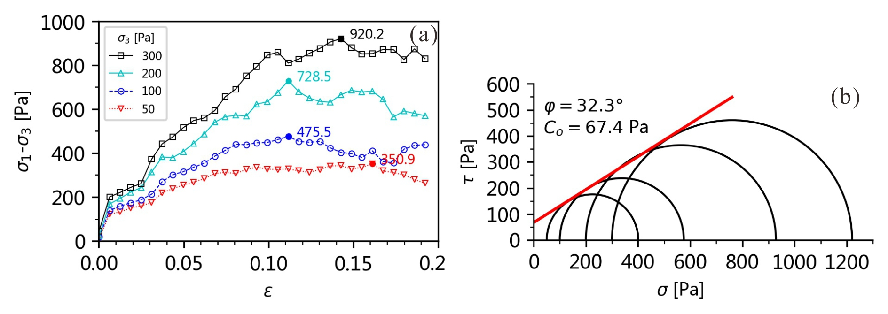
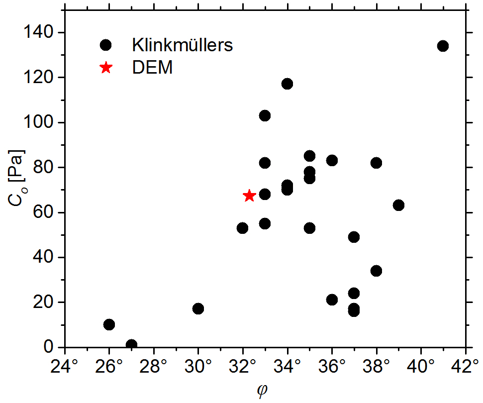
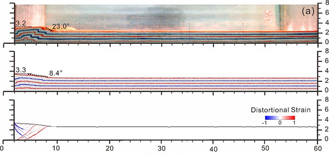
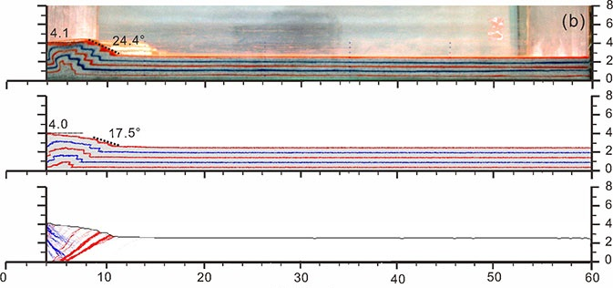
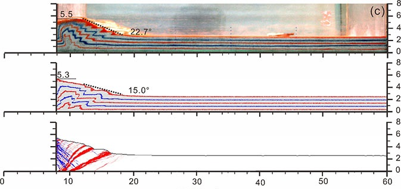
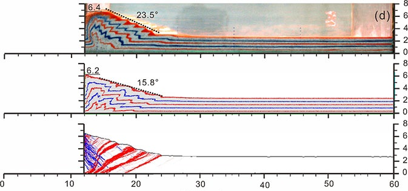
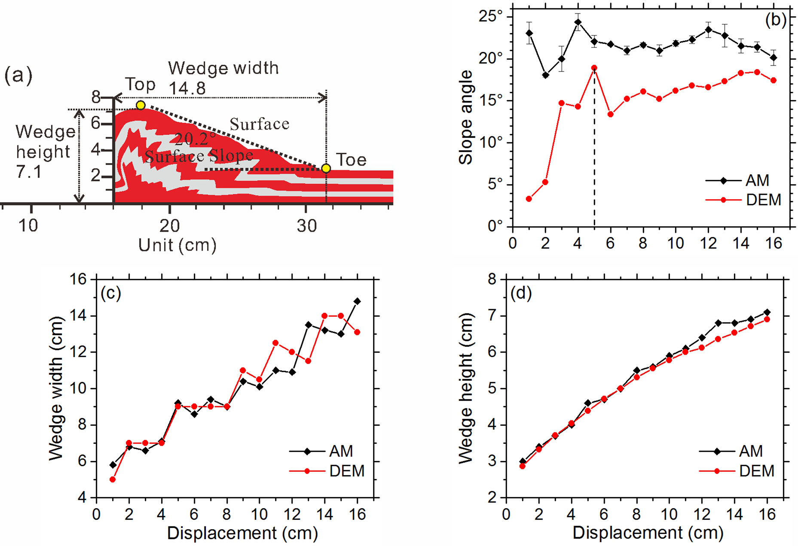

~10万颗粒，~13万时步，16核并行(Intel Xeon E5-2650)，耗时 ~3小时 完成计算。

离散元数值模拟结果
通过休止角试验和双轴试验标定了石英砂颗粒的细观参数，构建了一个典型的构造物理模拟(AM)和离散元数值模拟(DEM)试验，对比两种方法在构造变形研究中的差异与相似点，通过定性和定量（如坡角、断层倾角等）的方法，分析了两种方法的异同点。DEM与AM模拟结果较为一致，基本反映了AM中石英砂的变形行为。AM中材料选取有限（如硅胶、粘土、微玻璃珠等），而DEM材料选取范围大，但其模拟结果依赖参数选取。AM和DEM作为两种独立的方法，有很好的互补性 (李长圣,2019; Li et al.,2021)。
LI C.S., YIN H.W.*, et al. (2021) Calibration of the discrete element method and modelling of shortening experiments. Front. Earth Sci. 9:636512.评审意见 Excellent Important Nice
- Jonny Wu(Guest Associate Editor): The manuscript is an excellent work and important to publish.
- Stuart Hardy: This is an important paper from a methodological point of view - a reference almost.
- Amanda Hughes: This study does a nice job filling an existing need in modeling based studies.
题目
Calibration of the discrete element method and modelling of shortening experiments
作者
Changsheng Li 1,2,3,4, Hongwei Yin3*, Chuang Wu3, Yingchun Zhang3, Jiaxing Zhang3, Zhenyun Wu1,2, Wei Wang3, Dong Jia 3, Shuwei Guan4 and Rong Ren4
- State Key Laboratory of Nuclear Resources and Environment, East China University of Technology, Nanchang, China
- School of Earth Sciences, East China University of Technology, Nanchang, China
- School of Earth Sciences and Engineering, Nanjing University, Nanjing, China
- Research Institute of Petroleum Exploration and Development, PetroChina, Beijing, China
摘要
The discrete element method (DEM) is becoming widely accepted as an effective method for addressing tectonic problems in granular materials. It is capable of reproducing structures observed in the analog model (AM). However, the previous experiments also pointed to variability among DEM models and AMs in the number of fault zones, their dip angle and spacing, and the evolution of the surface slope of a thrust wedge. The accuracy of the DEM depends on the input parameter values, so the calibration of the discrete element method is very important. Microscopic properties of particles and macroscopic properties of loose quartz sand were calibrated through a series of repose angle and biaxial tests. Furthermore, an AM was constructed to simulate the evolution of the thrust wedge to compare with DEM results. DEM and AM results indicate an encouraging overall agreement in model evolution. Based on a new automated wedge quantification method, DEM results were systematically compared with AM results on the number of fault zones, their dip angle and spacing, the evolution of the surface slope of a thrust wedge, and other parameters. Our study provides a necessary comparison between commonly applied modeling approaches, which is important for more confidently applying these methods to understand real fold and thrust belt systems.
休止角试验


双轴剪切试验



演化过程
   
定量对比

ZDEM script:
表 1 颗粒微观参数表.
| d(mm) | k(N·m−1) | ρ(kg·m−2) | g(m·s−2) | f | μ | η(N·s·m−1) | υ(m·s−1) |
|---|---|---|---|---|---|---|---|
| 0.6 | 7.5e3 | 1.3e3 | 10.0 | 0.4 | 0.3 | 0.04 | 0.04 |
Note: The particle packing consists of four particle sizes, with diameters and quantity ratio of 0.2 mm, 0.4 mm, 0.5 mm, and 0.6 mm and 2:2:1:1, respectively. d, largest particle diameter. ρ, particle density. g, gravitational acceleration. f, safety factor of the time step. k, stiffness of the contact. μ, friction coefficient. η, dynamic viscosity. υ, velocity of the mobile wall.
沉积过程。ex8_dem_am_gen.py 中内容如下：
###################################### # title: 离散元数值模拟与构造物理模拟对比试验:1 沉积 # date: 2021-05-16 # authors: 李长圣 # E-mail: sheng0619@163.com # ref: Li et al. (2021) Calibration of the discrete element method and modelling of shortening experiments. Front. Earth Sci. doi: 10.3389/feart.2021.636512 # more info, see www.geovbox.com ####################################### start set disk hex BOX left 0.5e-3 right 615.0e-3 bottom 0.5e-3 height 160.0e-3 kn=1.5e4 ks=1.5e4 fric 0.3 wall id 4, nodes ( 5e-3 158.0e-3) ( 5.0e-3 5.0e-3), kn= 1.5e4 ks= 1.5e4 fric 0.0 wall id 5, nodes ( 5e-3 5.0e-3) (605.0e-3 5.0e-3), kn= 1.5e4 ks= 1.5e4 fric 0.0 wall id 6, nodes ( 605.0e-3 5.0e-3) (605.0e-3 158.0e-3), kn= 1.5e4 ks= 1.5e4 fric 0.0 gen grid idmin 0 rad discrete 0.1e-3 0.1e-3 0.2e-3 0.2e-3 0.25e-3 0.3e-3, x (5.0e-3, 605.0e-3), y (5.0e-3, 155.0e-3), GROUP ball_rand PROP color red den 1.3e3, fric 0.0, kn 1.5e4, ks 1.5e4 damp 0.4 FIX spin SET frac 0.4 SET GRAVITY ( 0.0, -10.0 ) SET stepbar 1000 SET save 20000 SET print 20000 SET ps 20000 HIST ID 1 INTERVAL 1000 , kinetic HIST ID 2 INTERVAL 1000 , step PLOT hist 2 1 CYC 60000 DEL range x (4.0e-3, 606.0e-3), y (30.0e-3, 1.0), CYC 20000 #save 2del.sav EXP ini_xyr.dat STOP挤压过程。ex8_dem_am_push.py 中内容如下：
###################################### # title: 离散元数值模拟与构造物理模拟对比试验:2 挤压 # date: 2021-05-16 # authors: 李长圣 # E-mail: sheng0619@163.com # ref: Li et al. (2021) Calibration of the discrete element method and modelling of shortening experiments. Front. Earth Sci. doi: 10.3389/feart.2021.636512 # more info, see www.geovbox.com ####################################### LOAD ini_xyr.dat SET disk hex BOX left 0.5e-3 right 615.0e-3 bottom 0.5e-3 height 110.0e-3 kn=1.5e4 ks=1.5e4 fric 0.3 WALL id 4, nodes ( 5e-3 110.0e-3) ( 5.0e-3 5.0e-3), kn= 1.5e4 ks= 1.5e4 fric 0.0 WALL id 5, nodes ( 5e-3 5.0e-3) (605.0e-3 5.0e-3), kn= 1.5e4 ks= 1.5e4 fric 0.0 WALL id 6, nodes ( 605.0e-3 5.0e-3) (605.0e-3 110.0e-3), kn= 1.5e4 ks= 1.5e4 fric 0.0 PROP color red den 1.3e3, fric 0.0, kn 1.5e4, ks 1.5e4 damp 0.0 FIX spin SET frac 0.4 SET GRAVITY ( 0.0, -10.0 ) SET stepbar 10000 HIST ID 1 INTERVAL 1000 , kinetic HIST ID 2 INTERVAL 1000 , step PLOT 2 1 SET damp lsm 0.04 PROP fric 0.30 PROP color lg PROP color red , range x 0.0 615.0e-3 y 9.0e-3 10.0e-3 PROP color blue, range x 0.0 615.0e-3 y 14.0e-3 15.0e-3 PROP color red , range x 0.0 615.0e-3 y 19.0e-3 20.0e-3 PROP color blue, range x 0.0 615.0e-3 y 24.0e-3 25.0e-3 PROP color red , range x 0.0 615.0e-3 y 29.0e-3 30.0e-3 wall id 4 fric 0.30 xv 40e-3 wall id 5 fric 0.30 wall id 6 fric 0.30 CYC 1 imple wall id 4 xmove 160e-3 save 20e-3 print 10e-3 ps 10e-3 vtk 10e-3 stop
The quantitative method of the thrust wedge based on mesh (Data)
Download：analog model.7z
The images of the analog model.
参考文献
Hardy S, et al (2009) Deformation and fault activity in space and time in high-resolution numerical models of doubly vergent thrust wedges. Marine and Petroleum Geology 26:232-248.Klinkmüller, M., Schreurs, G., Rosenau, M., and Kemnitz, H. (2016). Properties of Granular Analogue Model Materials: A Community Wide Survey. Tectonophysics 684, 23–38. doi:10.1016/j.tecto.2016.01.017 Morgan JK (2015) Effects of cohesion on the structural and mechanical evolution of fold and thrust belts and contractional wedges: Discrete element simulations. Journal of Geophysical Research: Solid Earth 120:3870-3896.
李长圣 (2019) 基于离散元的褶皱冲断带构造变形定量分析与模拟. 博士论文. 南京大学. 推荐下载 最新修订版 提取码
zdem